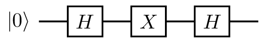
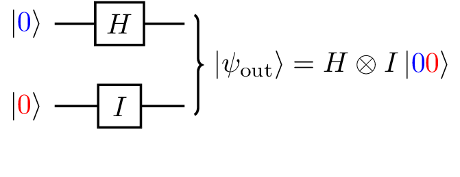
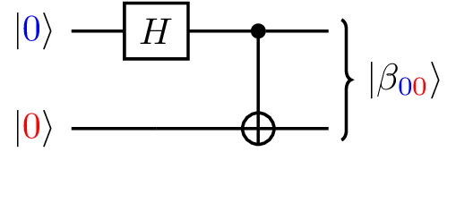
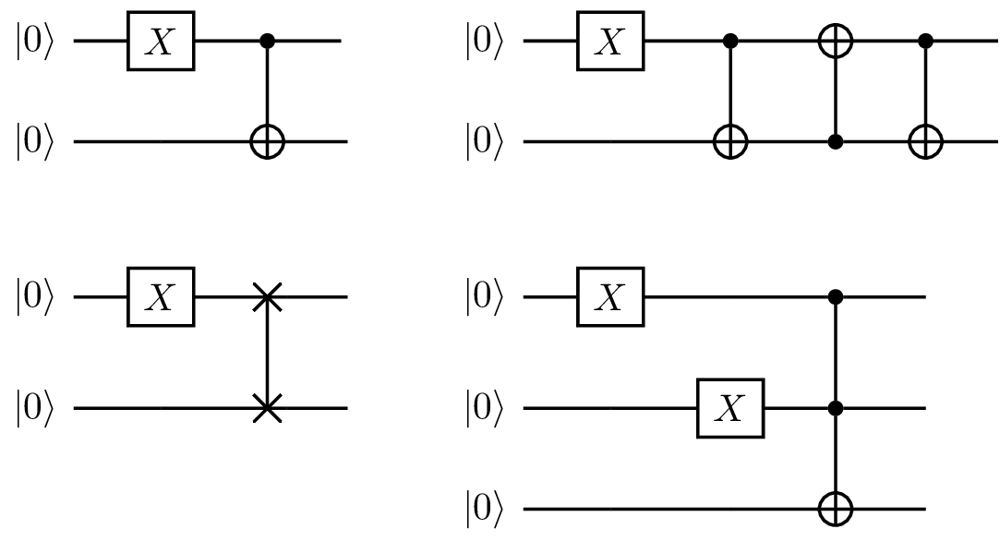
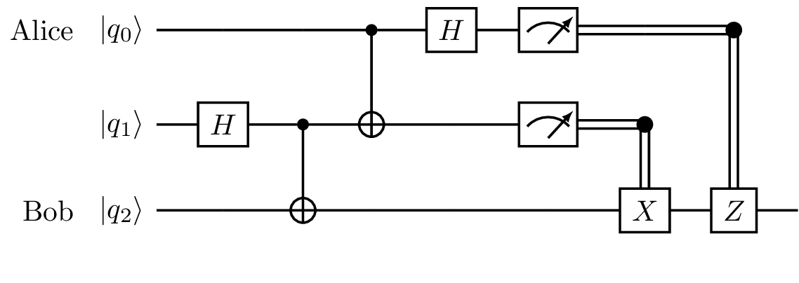
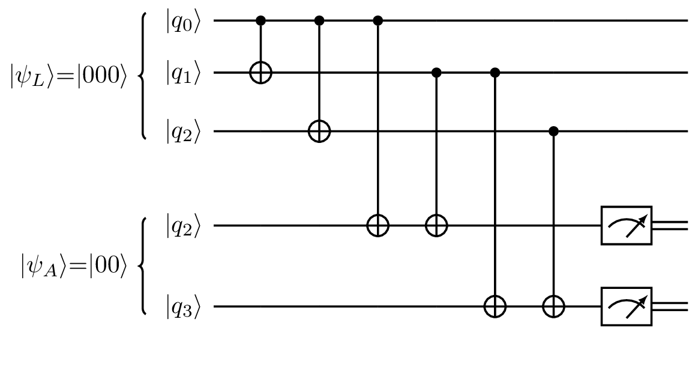

LibKet - The Quantum Expression Template Library.
- Repository: https://gitlab.com/mmoelle1/LibKet/
- Documentation: https://libket.readthedocs.io/
- API docs: https://mmoelle1.gitlab.io/LibKet/
Tutorial #1: Hands-on Introduction to Quantum Computing with LibKet
In this tutorial you will learn to
- include the LibKet library in your application
- write quantum expressions for single- and multi-qubit circuits
- evaluate quantum expressions on the QuEST quantum simulator
- send a quantum state via quantum teleportation
- detect bit and phase flips using locigal qubits
#include "LibKet.hpp"
LibKet's main functionality resides in the global namespace LibKet and in the nested namespaces circuits, filters, and gates.
Let's import their functionality.
using namespace LibKet;
using namespace LibKet::circuits;
using namespace LibKet::filters;
using namespace LibKet::gates;
Whenever you'd like to get help on a LibKet class or function you can simply type
?LibKet::filters::QFilter to display the documentation
?LibKet::filters::QFilter
auto expr = x(init());
In contrast to other quantum programming languages LibKet's quantum expressions have to be read from inside to outside. Note that the above expression does not perform any operations yet but only holds an abstract syntax tree (AST).
You can print it with the help of the show(...) function.
show<99>(expr);
Only one level of the AST is printed by default. That's why we set the print level to 99.
Quantum backend
Let's evaluate our first quantum expression on a quantum simulator.
LibKet supports a couple of them but the easiest one is probably the open-source QuEST Quantum Exact Simulation Toolkit .
The following code snippet shows how to
- Create a quantum device for a a single qubit
- Load our generic quantum expression into it
- Evaluate the quantum kernel and print the result
QDevice<QDeviceType::quest, 1> device;
device(expr).eval(1);
std::cout << device.reg() << std::endl;
What we see here are the complex-valued coefficients $ \alpha $ and $ \beta $ of the state vector
$$ \lvert\psi\rangle = \alpha \lvert 0 \rangle + \beta \lvert 1 \rangle $$with $ |\alpha|^2+|\beta|^2 = 1 $. Since we started with $ \lvert 0 \rangle $ and applied a NOT-gate to it, we obtain
$$ (0+i0)\lvert 0 \rangle + (1+i0)\lvert 1 \rangle = \lvert 1 \rangle $$Try yourself to create an expression for $ X\lvert1\rangle $ and evaluate it. What is the value of the coefficients?
auto expr = h(init());
QDevice<QDeviceType::quest, 1> device;
device(expr).eval(1);
std::cout << device.reg() << std::endl;
In this case the state vector is 'halfway between' $ \lvert0\rangle $ and $ \lvert1\rangle $ since $ \alpha = \sqrt{2}+i0 $ and $ \beta = \sqrt{2}+i0 $. This phenomenon is termed superposition of the two pure states. It should be noted that this look behind the curtain is only possible with a quantum simulator.
The coefficients $ \alpha $ and $ \beta$ are termed the probability amplitudes and $ \lvert\alpha\lvert^2 $ and $ \lvert\beta\lvert^2 $ are the probabilities. The QuEST simulator allows you to calculate them directly by calling device.probabilities().
auto expr = h(init());
QDevice<QDeviceType::quest, 1> device;
device(expr).eval(1);
std::cout << device.probabilities() << std::endl;
Try yourself to create an expression for $ H \lvert 1 \rangle $ and evaluate it. What is the value of the coefficients? What is their probabilities?
auto expr = measure(h(init()));
QDevice<QDeviceType::quest, 1> device;
device(expr);
for(int i=0; i<10; ++i) {
device.eval(1);
std::cout << device.creg() << std::endl;
}
You should see that there is a 50:50 change of ending up in either of the two states.
Next create a quantum expression for the following circuit and evaluate it

Multi-qubit quantum circuits
To create expressions for quantum circuits with multiple qubits we need to select qubits before applying quantum gates to them.
In LibKet this is established with the aid of quantum filters which act as masks or selection operators.

A quantum expression for the above two-qubit quantum circuit can be constructed as follows
auto expr = h(sel<0>(init()));
What is the result of evaluating it on the QuEST simulator? Don't forget to set the number of qubits to two.
Also try to print the expression's AST using the show(...) function to see how the filter sel<0>(...) affects it.
The operator<<(...) is overloaded for all quantum expression so that you can also print it in human-readable form
std::cout << expr << std::endl;
You might have noticed the small difference with the expression you typed above? sel<0>(...) versus sel_<0>(...).
Filters with a trailing _ such as sel_<0>(...) are a shorthand notation for sel<0>(all(...)), that is, application of the filter after resetting any previous selections. We will use this feature in the exercises below.
Multi-qubit quantum gates
In the above example the multi-qubit circuit was composed of two single-qubit gates, whereby the identidy gate was left out since it had no effecty.
LibKet also provides a couple of true multi-qubit gates like the CNOT-gate. Since it operates on two qubits simultaneously we have to pass two arguments to it. The first one is the control qubit and the second is the target qubit.
auto expr = cnot( sel<0>(), sel<1>( init() ) );
It is also possible to perform init() in the first argument but make sure it is not performed twice. That's why you should never type
auto expr = cnot( sel<0>(), sel<1>() ) ( init() );
Let us create a quantum expression for the following two-qubit circuit which creates the first Bell state $ \lvert \beta_{00}\rangle = \frac{1}{\sqrt{2}}(\lvert 00 \rangle + \lvert 11 \rangle) $

After initializing both qubits to zero, a Hadamard gate is applied to the zeroth qubit followed by a CNOT-gate applied to both.
auto expr = cnot(h(sel<0>()), sel<1>(init()));
Here we make use of the fact that filters persist after the application of gates. That is, the selection of the zeroth qubit via sel<0>() remains active after applying the Hadamard gate to it so that the control qubit is still the zeroth qubit.
Exercise: Bell states
Write quantum expressions for the three other Bell states
$$ \lvert \beta_{01}\rangle = \frac{1}{\sqrt{2}}(\lvert 01 \rangle + \lvert 10 \rangle) \qquad \lvert \beta_{10}\rangle = \frac{1}{\sqrt{2}}(\lvert 00 \rangle - \lvert 11 \rangle) / \sqrt{2} \qquad \lvert \beta_{11}\rangle = \frac{1}{\sqrt{2}}(\lvert 01 \rangle - \lvert 10 \rangle) / \sqrt{2} $$You can always reset the filter selection by applying the all(...) filter. That is, x(sel<1>(all(h(sel<0>())))) applies a Hadamard gate on the zeroth qubit and an X-gate in the first qubit afterwards. Alternatively, you can use the shorthand notation x(sel<1>_(h(sel<0>()))).
Exercise: Basic quantum circuits
Write quantum expressions for the following circuits. You might need to use the all() filter or the shorthand notation sel_<...> multiple times.

The second gate in the third exercise is a SWAP-gate, swap(qubit0, qubit1) which simply swaps the two qubits.
The last gate in the fourth exercise is termed Toffoli or CCNOT-gate, ccnot(ctrl0, ctrl1, target) which applies a Pauli-X or NOT-operation on the target qubit of both control qubits are true.
Exercise: Quantum teleportation
Let us have a look at a famous quantum algorithm - Quantum Teleportation. In short, Alice wants to send the qubit state $ \lvert q_0\rangle = \alpha \lvert0\rangle+\beta \lvert1\rangle$ to Bob. The no-cloning theorem forbids her to make a simple copy of the unknown quantum state. What she can do is to share with Bob an entangled qubit pair and transfer the information via two classical bits. This, of course, involves two measurements.

Implement a LibKet quantum expression for the above quantum circuit. Start with $ \lvert q_1\rangle = \lvert q_2\rangle:=\lvert0\rangle $ and let Alice send the message $\lvert q_0\rangle = \lvert 1 \rangle $ to Bob.
Exercise: Quantum error correction
At the end of the first part of this tutorial we have briefly introduced the concept of quantum error correction (QEC). In QEC, quantum information is protected by encoding a logical qubit into several unreliable physical qubits and by detecting possible errors through the use of extra ancilla qubits (parity-checks).

Let’s have a closer look at the bit-flip code by implementing the above circuit in LibKet. In this case, our logical state corresponds to a logical 0, $\lvert\psi_L\rangle=\lvert 000\rangle$. After the encoding part (the first two CNOTs) but before the detection part (the following 4 CNOTs) introduce different single bit-flip errors in each of the data qubits (e.g. $X \lvert q_1\rangle$) and observe what the measurement results are (i.e. measure $\lvert q_3\rangle$ and $\lvert q_4\rangle$).